Museum of Tolerance Jerusalem
The Sanhedrin
Educational Experience
"What would history's greatest minds say about today's dilemmas?"
Format
AI-Powered Immersive Deliberation
Duration
20–25 Minute Sessions
Audience
Museum Visitors · Schools · Corporate
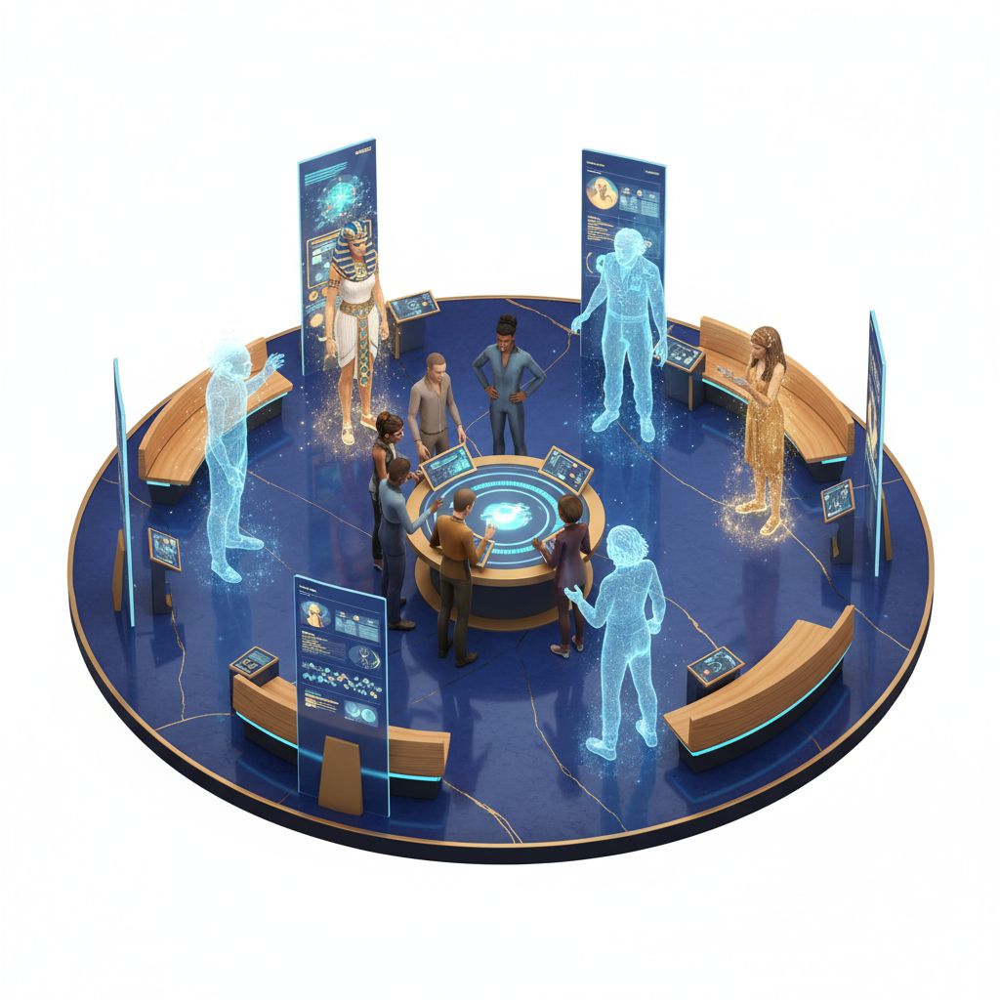
The Urgency
Discourse is
Broken
Young people walk out of rooms when exposed to opposing views.
"I disagree with you" has become synonymous with "You are my enemy."
- Tolerance cannot be taught via passive history lectures
- Civic discourse is a muscle — it must be built through experience
- No "civic discourse simulator" exists to train these skills
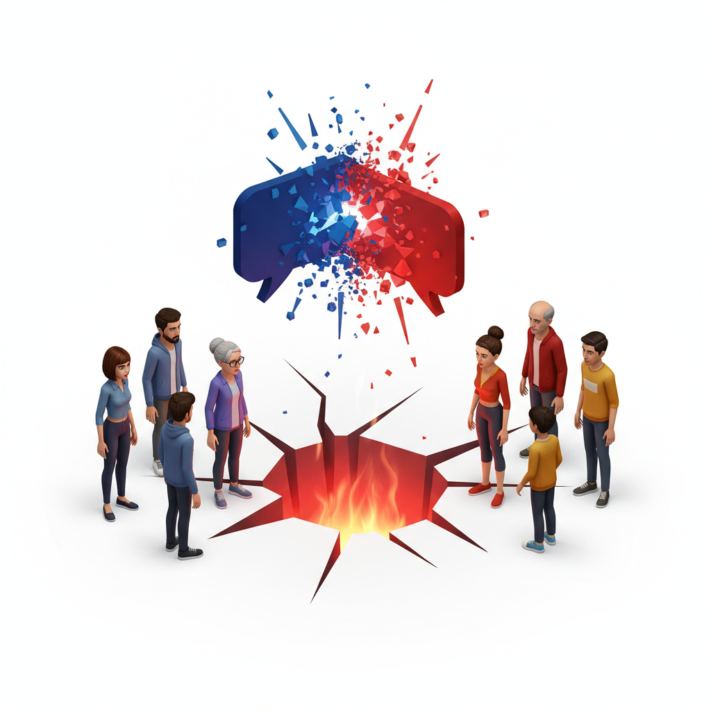
From adversarial conflict → collaborative inquiry
The Cognitive Twist
Dispute as a
Dynamic Puzzle
We reframe disagreement: it's no longer a battle to be won, but a puzzle to be solved together.
The Sanhedrin as Operating System
Disagreement becomes collaborative investigation — a Sherlock Holmes-style inquiry where participants uncover hidden puzzle pieces: arguments, facts, shared agreements.
Powered By
13 Talmudic Thinking Modes — structured methods for examining every facet of a dilemma without tribalism.
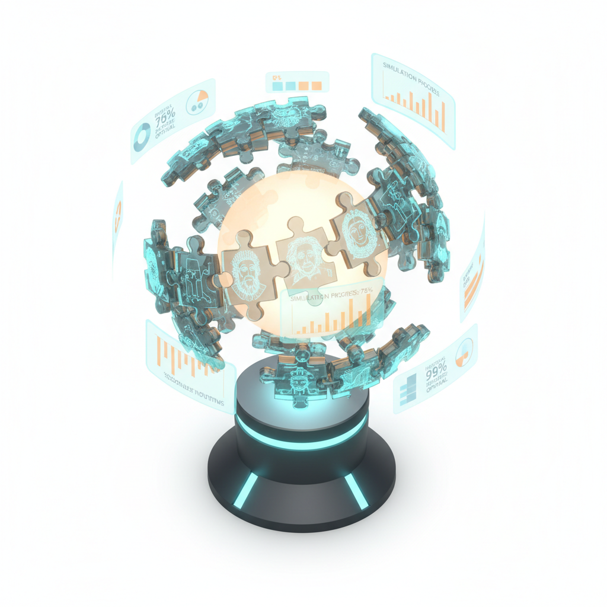
Each deliberation reveals hidden puzzle pieces
that complete the full picture
The Promise
Learn to argue better in 30 minutes —
without needing to agree.
An AI-powered immersive space where visitors engage with history's greatest thinkers in real-time deliberation about modern moral dilemmas.
Deliberate
Thinking
End-to-End Flow
The Visitor Journey
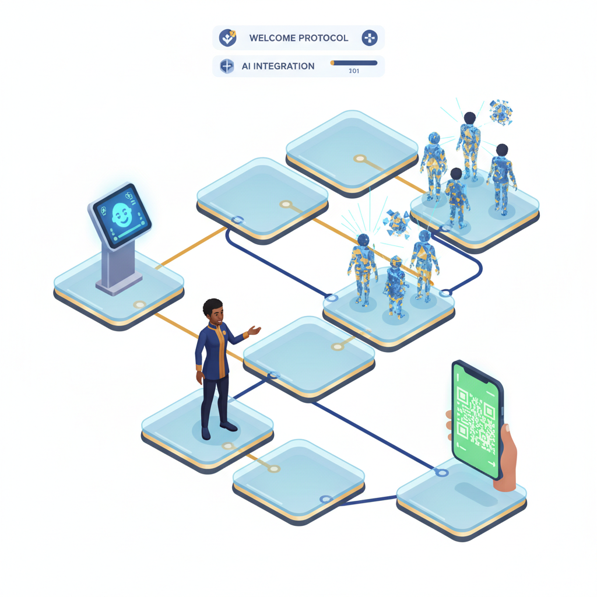
Input Dilemma
Visitor arrives and inputs a personal moral dilemma via touchscreen interface.
Human Facilitator
The Game Master sets the stage. Human charisma is non-negotiable for live orchestration.
AI Orchestration
The "Nasi" profiles the visitor and selects 5–7 relevant thinkers by wisdom domain.
Deliberation
Selected thinkers and human participants deliberate, uncovering puzzle pieces together.
Synthesis
System highlights contradictions and expands perspective — no single "right answer".
Takeaway
Personalized digital summary with key insights and a reflection question via QR code.
Structured, repeatable 20–25 minute loop with human-in-the-loop orchestration
System Design
Role-Based
Architecture
This is not a standard chatbot array. We separate Persona from Role.
- A persona can step into different functional roles depending on session needs
- Humans and AI agents swap roles seamlessly
- Highly modular — dynamic interactions, never scripted
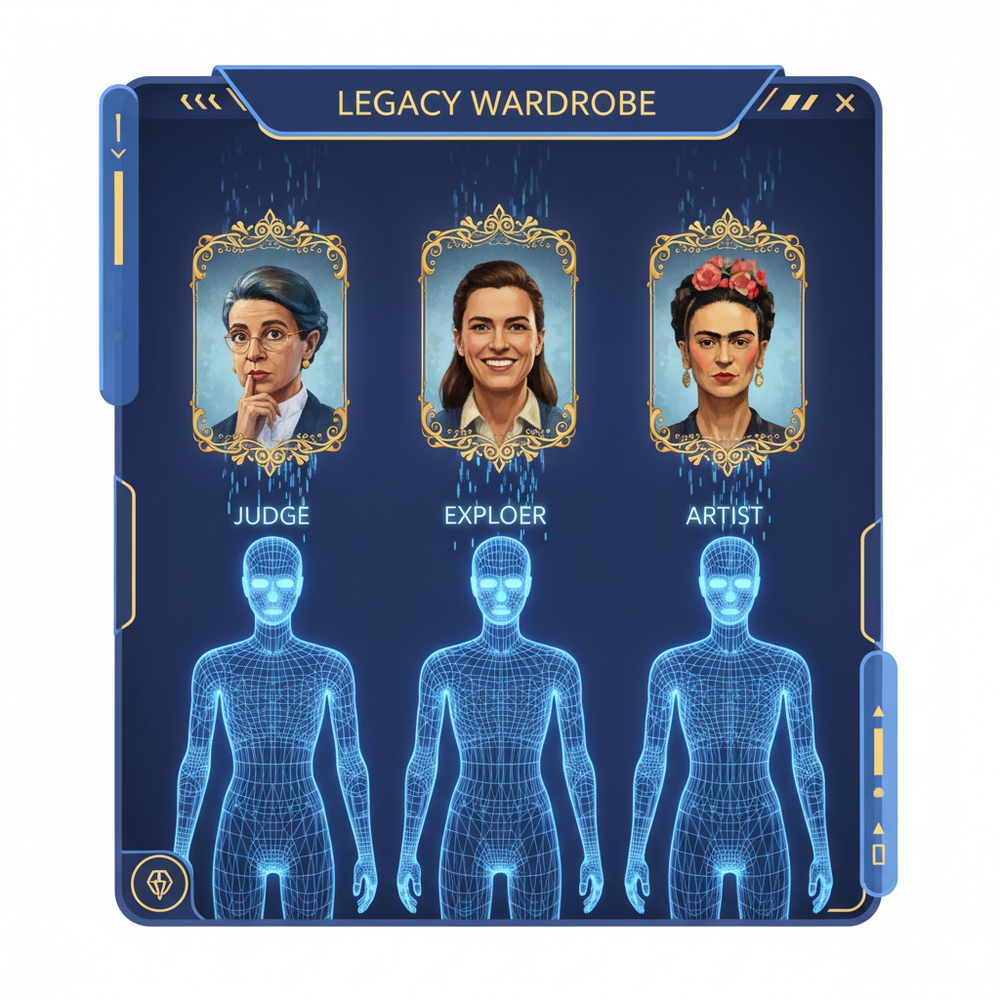
Any persona can occupy any role — including human participants
Live Demo
Sample
Session
The Dilemma
The ancient "Goring Ox" (השור שנגח) modernized:
"Who is liable when an Autonomous Vehicle causes a fatal accident?"
Universal ethical gray zone (Tech/AI ethics) — no tribal political triggers
One Platform, Two Configurations
Experience Modes
The same technological infrastructure serves both the pedagogical vision and the museum's need for visitor attraction.
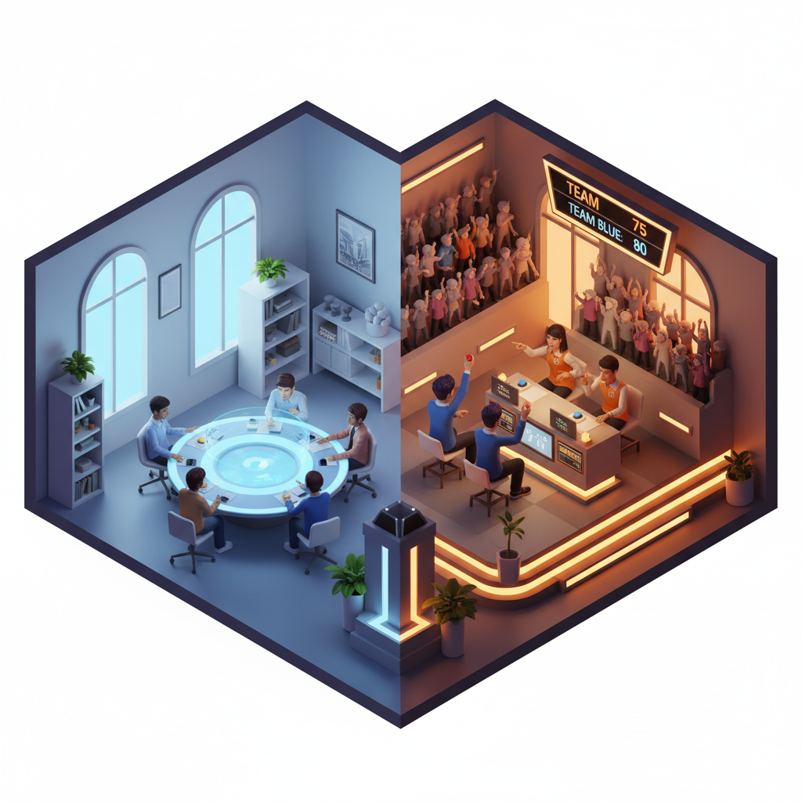
Culture of Disagreement
Machloket Mode
- Pedagogical & process-focused
- Collaborative inquiry
- Deep moral exploration
- Ideal for school groups
Tech
Stack
Debate Mode
Competition Mode
- Competitive & outcome-focused
- High-energy "game show" dynamic
- Rhetorical skill-building
- Tourists & corporate groups
Spatial Design
The Physical
Space
- Circular room designed for civic discourse
- Peripheral screens for spectator voting & reactions
- Spectators are active Sanhedrin judges, not passive watchers
- Central immersive display as the visual "wow" factor
- Reliable, high-impact AV integration
Key insight: Every person in the room receives value — even those not actively speaking participate as judges of the deliberation.
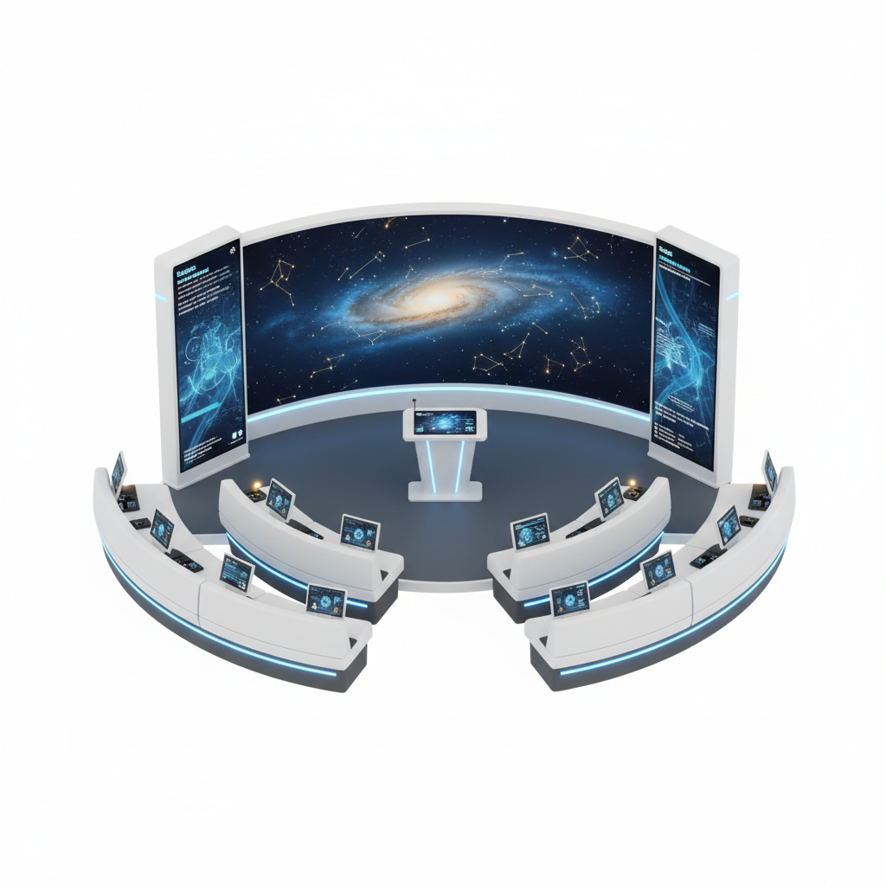
Proven Foundation
We Already
Did This
The Maimonides (Rambam) Interactive Exhibit serves as our validated sibling project.
Expert Micha Goodman validated the conversational quality and depth of our AI model.
Key Learning
"Rambam was a monologue sold in one slide. Sanhedrin is a multi-agent dialogue — the next evolution."
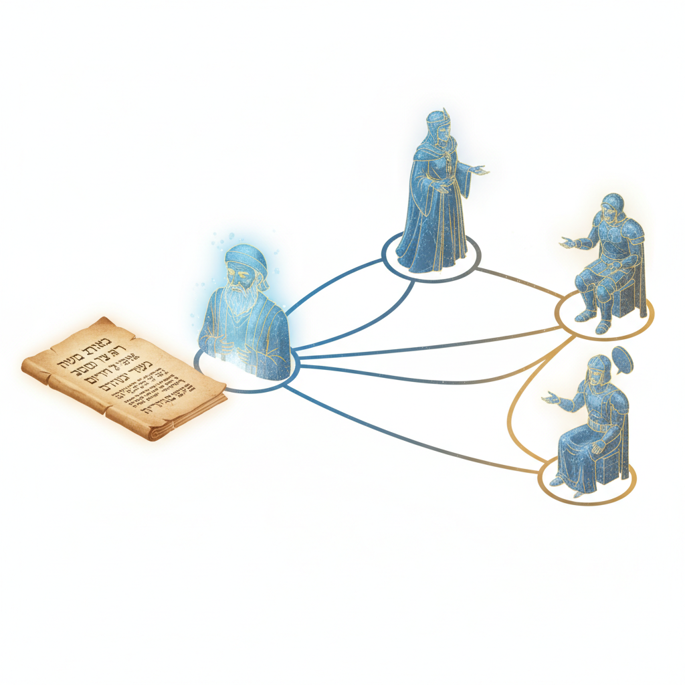
From single-agent monologue → multi-agent deliberation
Transparent Risk Assessment
Solved vs.
Ahead
- Individual agent quality & character modeling
- Conversation protocols & frameworks
- Content architecture & 13 Thinking Modes
- Rambam exhibit validation
- A2A (Agent-to-Agent) real-time interaction
- Multi-agent orchestration at scale
- Live dynamics & turn management
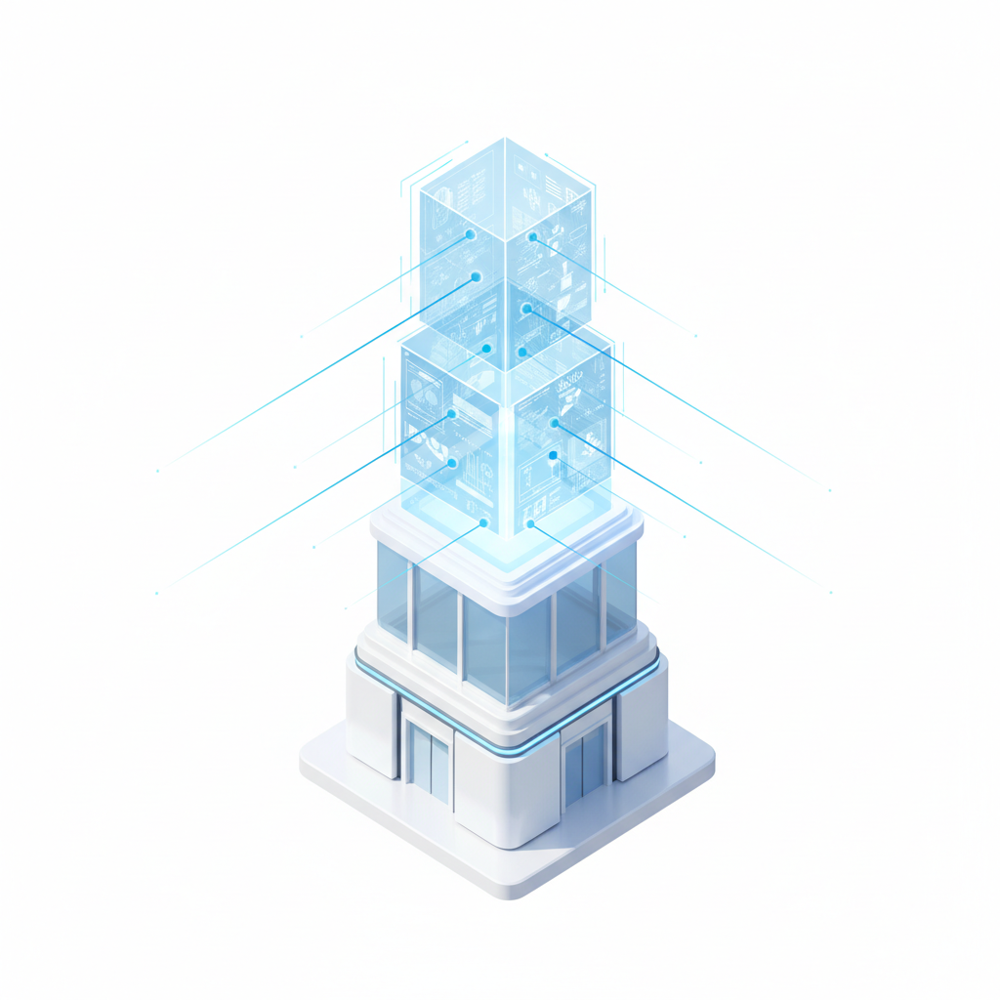
Mitigation Strategy
We are proving the final 30% via a Phase 1 POC:
MULTI-AGENT WHATSAPP GROUP
Testing live dynamics with real users before building the UI. 3 agents + 2 humans in real-time group deliberation.
Low-cost, high-signal validation of the hardest technical challenge
Market Position
Competitive Advantage
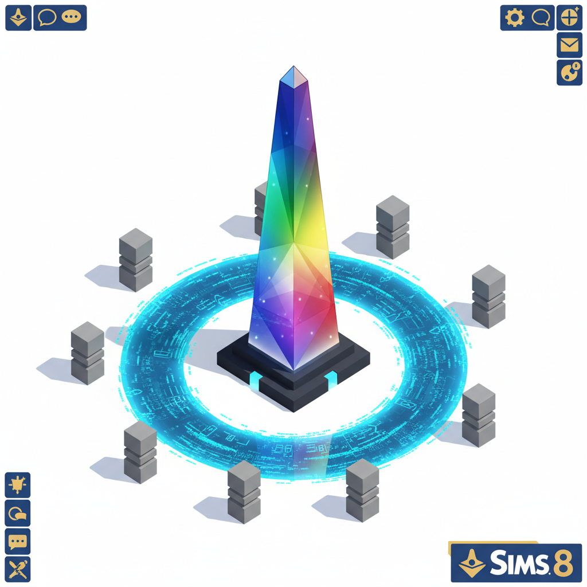
| Capability | Standard Chatbot | Museum Exhibit | Debate AI | Sanhedrin |
|---|---|---|---|---|
| Multi-perspective (5–7 characters) | ✗ | ✗ | ◐ | ✓ |
| No single "right answer" | ✗ | ◐ | ✗ | ✓ |
| Orchestrated meta-logic (13 Modes) | ✗ | ✗ | ✗ | ✓ |
| Human-in-the-loop integration | ✗ | ✓ | ✗ | ✓ |
| Immersive physical experience | ✗ | ✓ | ✗ | ✓ |
| Real-time multi-agent deliberation | ✗ | ✗ | ◐ | ✓ |
| Institutional backing (MOTJ) | ✗ | ✓ | ✗ | ✓ |
| Scalable EdTech platform | ◐ | ✗ | ◐ | ✓ |
The moat: Integration of agentic systems + structured Talmudic dispute methodology + institutional credibility
Expanding TAM
The Debate
Gym
This isn't just a museum exhibit — it's an education technology platform.
The initial investment funds a highly scalable EdTech ecosystem that expands from a single physical installation to global digital reach.
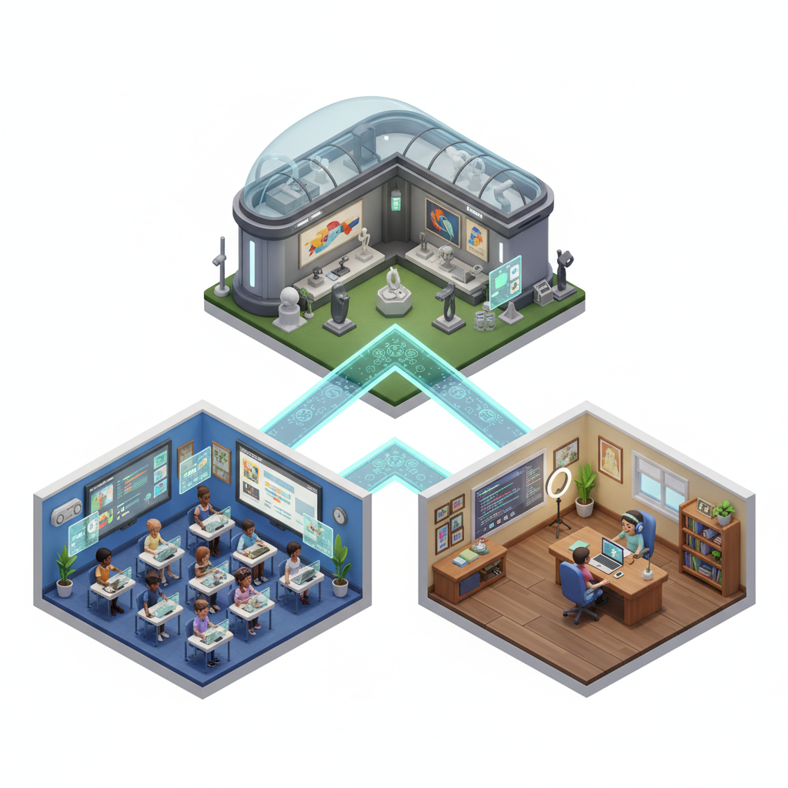
Museum (premium) · Schools (curriculum) · Home/Online (global reach)
Execution Plan
Roadmap &
Milestones
A phased approach to systematically mitigate technical risk while delivering demonstrable progress at every stage.
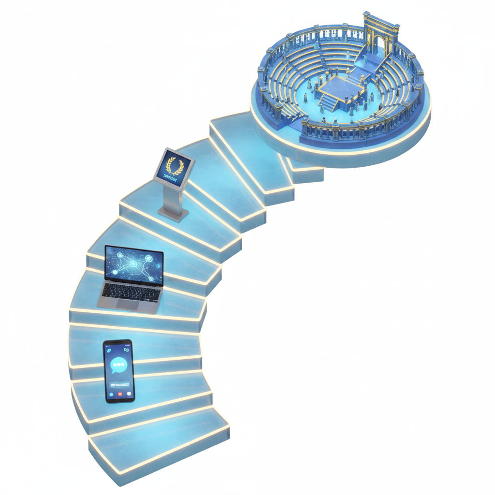
Financial & Strategic ROI
Business Case
The Ask
Funding for technology development, content creation, and spatial build-out.
Revenue Streams
Museum Admission
Premium experience tier integrated with museum ticketing
VIP Tiers
Extended sessions, private groups, corporate events
Licensing
White-label platform for other institutions
EdTech Subscriptions
School programs & online debate training
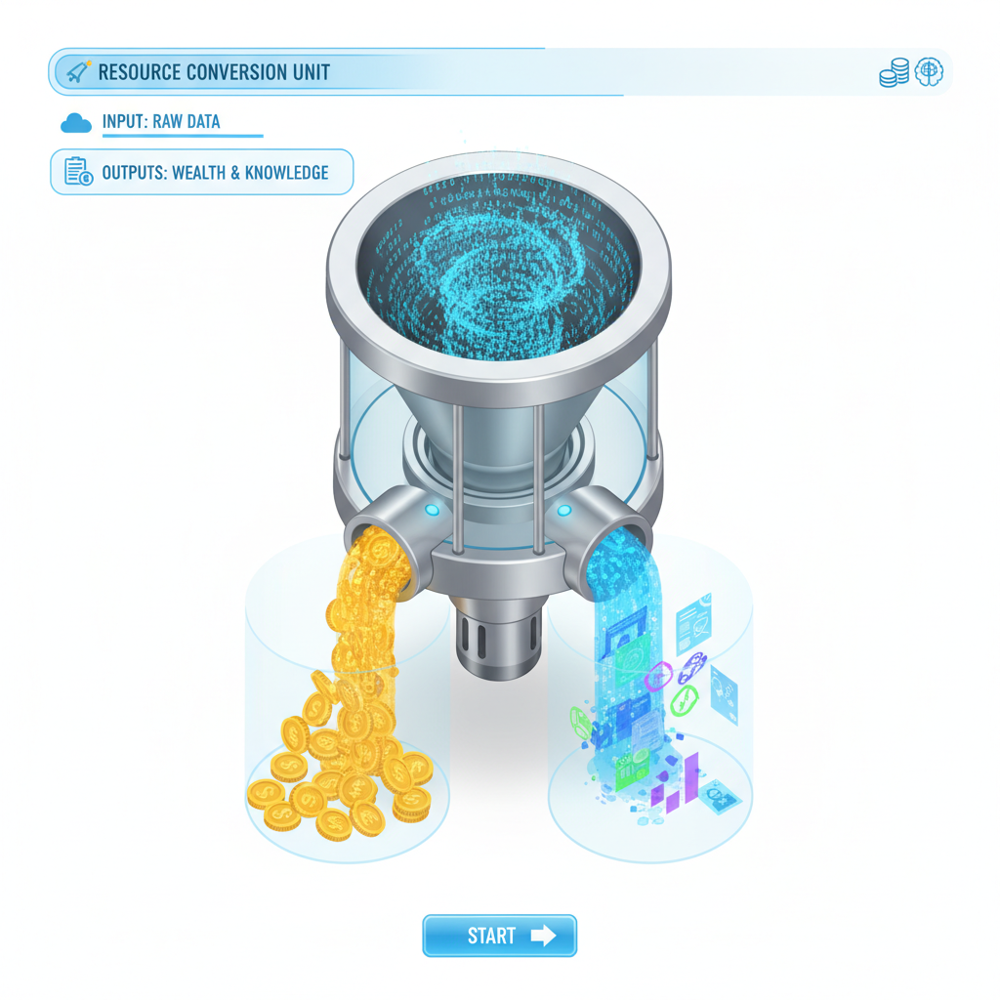
Research & Insight Hub
The system creates a highly valuable, anonymized data repository on societal moral reasoning:
- Insights on Israeli societal trends
- Academic partnership opportunities
- Longitudinal moral reasoning data
- Cross-cultural comparison studies
MASSIVE IP GENERATION
The Builders
The Team
A balanced triad of technology, business, and cultural knowledge.
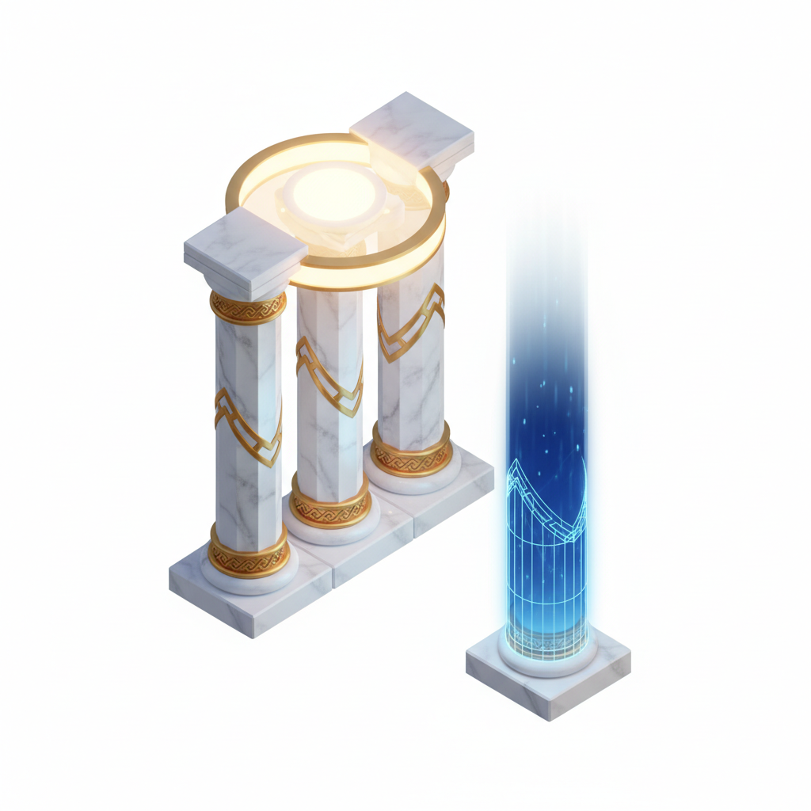
Tech Architecture
AI systems, multi-agent orchestration, LLM infrastructure
Project Strategy
Museum operations, business development, stakeholder alignment
Knowledge Holders
Talmudic scholarship, educational methodology, content design
The Missing Piece
World-renowned Debate Content Expert to design competitive mode
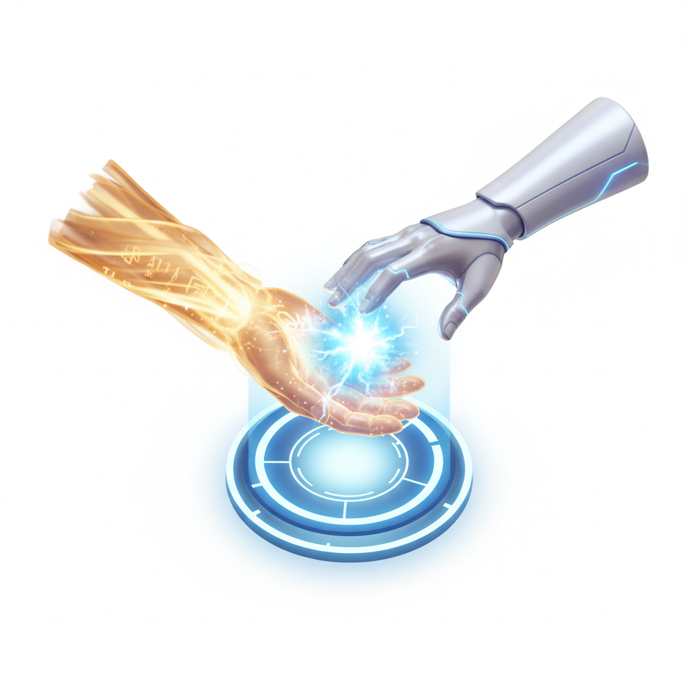
"The Sanhedrin didn't give answers.
They gave people the tools to think.
We're bringing that to the 21st century."
The Green Light
- Fund the Phase 1 POC — validate the final 30%
- Schedule the deep-dive technical review
- Move past proof → production
Deep-Dive Materials
Appendix
A. Technical Architecture
API Gateway, Nasi/Av Beit Din Orchestrator logic, LLM fine-tuning approach, infrastructure topology, and scaling considerations.
Visitor → API Gateway → Nasi Orchestrator → Agent Pool → Synthesis Engine → Takeaway Generator
B. 13 Talmudic Thinking Modes
Complete role mapping and application framework:
C. Competitive Analysis
Detailed comparison against: ChatGPT roleplay, Character.AI, Kialo debate platform, traditional museum interactives, and academic debate training tools.
D. User Personas
Daniel the Seeker
Curious, open-minded, wants to explore moral complexity
Sarah the Balanced
Structured thinker, values fairness, seeks synthesis